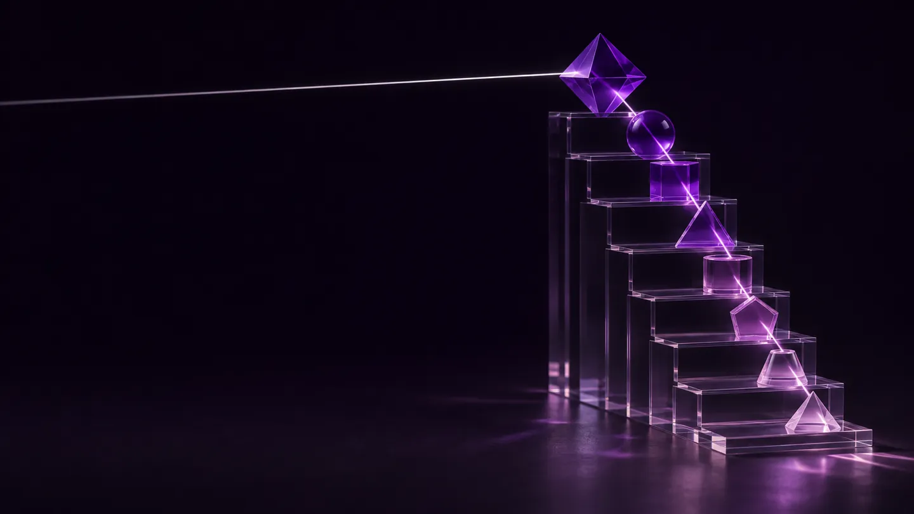

Claude Code skill'i ve paneli
Pahalı ana modelin yönettiği, işleri rütbeye göre daha ucuz modellere dağıtan bir Claude Code skill'i ve onu düzenleyen panel.
Ana döngü güçlü ama pahalı tek bir modelde çalışır; plan, brief, zor kararlar ve son sentezi o yapar, gerisi işi taşıyabilecek en ucuz rütbeye gider. Sekiz rütbe vardır: Komutan, Baş danışman, Üçüncü görüş, Şeytanın avukatı, Subay, Astsubay, Er ve İşçi. Her rütbede görevdeki model routing.json dosyasında yazar; fable-routing paneli bu dosyayı okur ve yazar. İşler Claude alt ajanlarına, Codex'e, GitHub Copilot CLI'a ve Abacus.AI CLI'a gidebilir.
Özellikler
Rütbeler
Komutan mimariyi, zor kararları ve son sentezi yürütür; Baş danışman zor kararda ikinci görüş verir; Üçüncü görüş iki taraf anlaşamadığında hakemlik eder; Şeytanın avukatı yalnız geri dönüşsüz ya da yüksek riskli kararlarda planı kırmaya çalışır. Subay orta-zor işleri, Astsubay basit-orta işleri, Er operatör GPT tarafına iş göndermek istediğinde yürütmeyi, İşçi binlerce satırlık veri temizliğini alır.
Panel
Havuzları açıp kapatır, bir rütbe içindeki sırayı ve bir modelin başka rütbeye taşınmasını düzenler, model başına effort ayarlar. Düzen routing.json'a kaydedilir; tablo değiştiğinde operatörün bir sonraki mesajına not eklenir. Panel ayrıca Claude ve Codex pencerelerinin doluluğunu, Abacus'ta plana karşı harcanan krediyi ve Copilot çağrılarını gösterir.
Brief biçimleri: Subay'a gevşek (amaç, bağlam, kısıtlar, bitmiş hâl); Astsubay'a biraz daha sıkı (dosyalar, adımlar, çıktı biçimi, dokunulmayacaklar); Er'e eksiksiz ve adım adım; Baş danışmana eş düzeyde bir soru ve kanıt; Şeytanın avukatına "planı kır, en zayıf varsayımı söyle"; İşçi'ye tek bir kesin kural kümesi, örnekler ve küçük gruplar. Uzun brief bir dosyaya yazılır.
Kurallar
Her çağrıda model açıkça yazılır; zorluğa göre bir rütbeye gidilir, emin olunmazsa ucuz olanı seçip sonucu doğrulanır; ana döngü bağlamını sade tutar, geniş okuma ve ham veri bir ajana gider.
Doğrulama
Bir ajanın raporu iddiadır; bitti denmeden önce fark, çıktı ya da bir örnek denetlenir. Danışmanların aynı fikirde olması kanıt değildir, çünkü modeller kör noktaları paylaşır.
Olgular
- Sekiz rütbe: Komutan, Baş danışman, Üçüncü görüş, Şeytanın avukatı, Subay, Astsubay, Er, İşçi
- Dört model havuzu (Claude, Codex, Copilot, Abacus.AI); her havuzun kotası ayrıdır
- Bir rütbede görevdeki model, sırasındaki havuzu açık ilk modeldir
- Havuzu kapalı bir modele hiç çağrı yapılmaz
- Danışman çağrıları salt okunur çalışır ve birbirinin cevabını görmez
- Panel /fable-panel komutuyla açılır
- Pahalı ana modelin işi yargıdır, işi taşımak değil
Skill, Avenox'un avenoxskills deposundaki aynı adlı skill'den türetildi (MIT); bugün aktif kullanılan hâlini Verinoda Labs geliştirdi. fable-routing paneli Verinoda Labs'ın kendi çalışmasıdır.
- Tür
- Claude Code skill'i ve paneli
- Teknoloji
- Claude Code skill'i (SKILL.md ve routing.json) ve fable-routing paneli (/fable-panel)
- Lisans
- MIT
- Bağlantılar
- Projenin kendi sitesiGitHub deposu